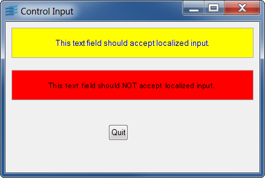

changelangThis sample demonstrates how to use localized message databases and change the language of the UI.
This application needs to be started either in the French or
the Italian locale. Since this setting is system dependent,
please refer to the User's Manual Internationalization chapter.
(For example on an HP-UX system, setting your LANG environment
variable to fr_FR.iso88591 or it_IT.iso88591; on a Solaris
system, setting your LANG environment variable to fr or it;
on a Windows system, setting your Control Panel Regional
Settings to French or Italian).
Clicking on any of the language button updates automatically
the display using localized labels, due to the
IlvDisplay::setCurrentLanguage.
You may notice that only the Italian translation of the Quit
button is not found. This is because the label message is coming
from the views.dbm file which is not provided in Italian.
For demonstration purposes, this sample code uses portable GUI
elements from the Gadgets package of the Rogue Wave Views suite.
Feel free to use these elements in your application if you have
a license for Rogue Wave Views or for Rogue Wave Views Controls.
This information applies to the classes located in the library ilvgadgt,
listed in the README file that you can find in the installation directory.
IlvDisplaycontrolinputThis sample demonstrates how to control localized input in input fields.

Start this application in any locale. Be sure to have started
a valid input method for this locale. Since this setting is
system dependent, please refer to the User's Manual
Internationalization chapter and your system User's guide.
Type localized input in the text fields. You should not be
able to do so in the second (the red) text field.
(For example on an HP-UX system, set your LANG environment
variable to fr_FR.iso88591, and try typing e-acute using the
multi-key or the dead-key method; on a Windows system, try using
Japanese).
For demonstration purposes, this sample code uses portable GUI
elements from the Gadgets package of the Rogue Wave Views suite.
Feel free to use these elements in your application if you have
a license for Rogue Wave Views or for Rogue Wave Views Controls.
This information applies to the classes located in the library ilvgadgt,
listed in the README file that you can find in the installation directory.
IlvGraphic